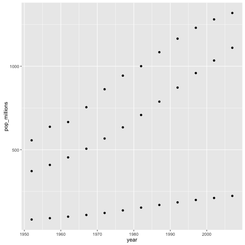

R for reproducible scientific analysis
Vectorisation
Learning Objectives
- To understand vectorised operations in R.
Most of R’s functions are vectorised, meaning that the function will operate on all elements of a vector without needing to loop through and act on each element one at a time. This makes writing code more concise, easy to read, and less error prone.
x <- 1:4
x * 2[1] 2 4 6 8
The multiplication happened to each element of the vector.
We can also add two vectors together:
y <- 6:9
x + y[1] 7 9 11 13
Each element of x was added to its corresponding element of y:
x: 1 2 3 4
+ + + +
y: 6 7 8 9
---------------
7 9 11 13Challenge 1
Let’s try this on the pop column of the gapminder dataset.
Make a new column in the gapminder data frame that contains population in units of millions of people. Check the head or tail of the data frame to make sure it worked.
Challenge 2
On a single graph, plot population, in millions, against year, for all countries. Don’t worry about identifying which country is which.
Repeat the exercise, graphing only for China, India, and Indonesia. Again, don’t worry about which is which.
Comparison operators, logical operators, and many functions are also vectorized:
Comparison operators
x > 2[1] FALSE FALSE TRUE TRUE
Logical operators
a <- x > 3 # or, for clarity, a <- (x > 3)
a[1] FALSE FALSE FALSE TRUE
Most functions also operate element-wise on vectors:
Functions
x <- 1:4
log(x)[1] 0.0000000 0.6931472 1.0986123 1.3862944
Vectorised operations work element-wise on matrices:
m <- matrix(1:12, nrow=3, ncol=4)
m * -1 [,1] [,2] [,3] [,4]
[1,] -1 -4 -7 -10
[2,] -2 -5 -8 -11
[3,] -3 -6 -9 -12
Challenge 3
Given the following matrix:
m <- matrix(1:12, nrow=3, ncol=4)
m [,1] [,2] [,3] [,4]
[1,] 1 4 7 10
[2,] 2 5 8 11
[3,] 3 6 9 12
Write down what you think will happen when you run:
m ^ -1m * c(1, 0, -1)m > c(0, 20)m * c(1, 0, -1, 2)
Did you get the output you expected? If not, ask a helper!
Challenge 4
We’re interested in looking at the sum of the following sequence of fractions:
x = 1/(1^2) + 1/(2^2) + 1/(3^2) + ... + 1/(n^2)This would be tedious to type out, and impossible for high values of n. Use vectorisation to compute x when n=100. What is the sum when n=10,000?
Challenge solutions
Solution to challenge 1
Let’s try this on the pop column of the gapminder dataset.
Make a new column in the gapminder data frame that contains population in units of millions of people. Check the head or tail of the data frame to make sure it worked.
gapminder$pop_millions <- gapminder$pop / 1e6
head(gapminder) country year pop continent lifeExp gdpPercap pop_millions
1 Afghanistan 1952 8425333 Asia 28.801 779.4453 8.425333
2 Afghanistan 1957 9240934 Asia 30.332 820.8530 9.240934
3 Afghanistan 1962 10267083 Asia 31.997 853.1007 10.267083
4 Afghanistan 1967 11537966 Asia 34.020 836.1971 11.537966
5 Afghanistan 1972 13079460 Asia 36.088 739.9811 13.079460
6 Afghanistan 1977 14880372 Asia 38.438 786.1134 14.880372
Solution to challenge 2
Refresh your plotting skills by plotting population in millions against year.
plot(gapminder$year, gapminder$pop_millions)
countryset <- c('China', 'India', 'Indonesia')
y <- gapminder[gapminder$country %in% countryset, ]
plot(y$year, y$pop_millions)
Solution to challenge 3
Given the following matrix:
m <- matrix(1:12, nrow=3, ncol=4)
m [,1] [,2] [,3] [,4]
[1,] 1 4 7 10
[2,] 2 5 8 11
[3,] 3 6 9 12
Write down what you think will happen when you run:
m ^ -1
[,1] [,2] [,3] [,4]
[1,] 1.0000000 0.2500000 0.1428571 0.10000000
[2,] 0.5000000 0.2000000 0.1250000 0.09090909
[3,] 0.3333333 0.1666667 0.1111111 0.08333333
m * c(1, 0, -1)
[,1] [,2] [,3] [,4]
[1,] 1 4 7 10
[2,] 0 0 0 0
[3,] -3 -6 -9 -12
m > c(0, 20)
[,1] [,2] [,3] [,4]
[1,] TRUE FALSE TRUE FALSE
[2,] FALSE TRUE FALSE TRUE
[3,] TRUE FALSE TRUE FALSE
Challenge 4
We’re interested in looking at the sum of the following sequence of fractions:
x = 1/(1^2) + 1/(2^2) + 1/(3^2) + ... + 1/(n^2)This would be tedious to type out, and impossible for high values of n. Can you use vectorisation to compute x, when n=100? How about when n=10,000?
sum(1/(1:100)^2)[1] 1.634984
sum(1/(1:1e04)^2)[1] 1.644834
n <- 10000
sum(1/(1:n)^2)[1] 1.644834
We can also obtain the same results using a function:
inverse_sum_of_squares <- function(n) {
sum(1/(1:n)^2)
}
inverse_sum_of_squares(100)[1] 1.634984
inverse_sum_of_squares(10000)[1] 1.644834
n <- 10000
inverse_sum_of_squares(n)[1] 1.644834